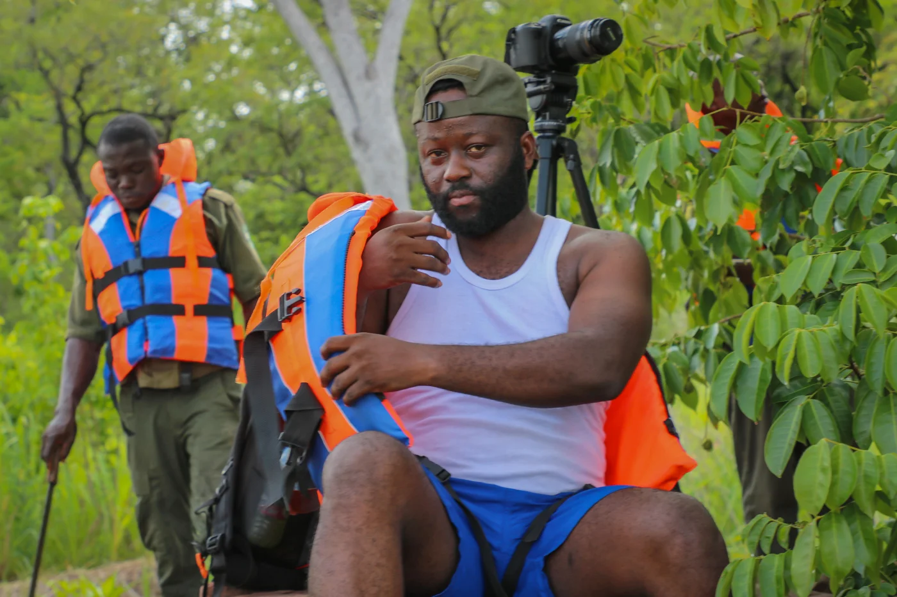
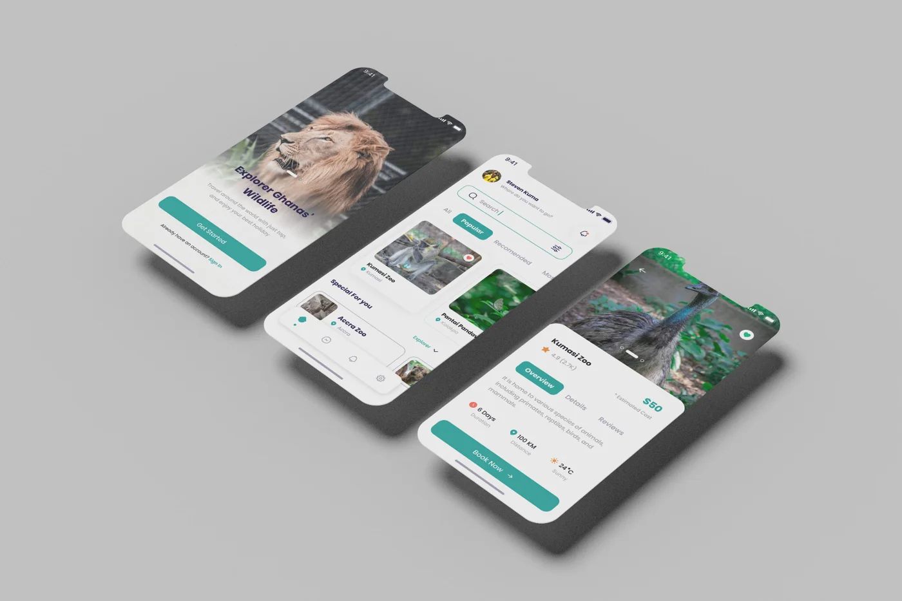
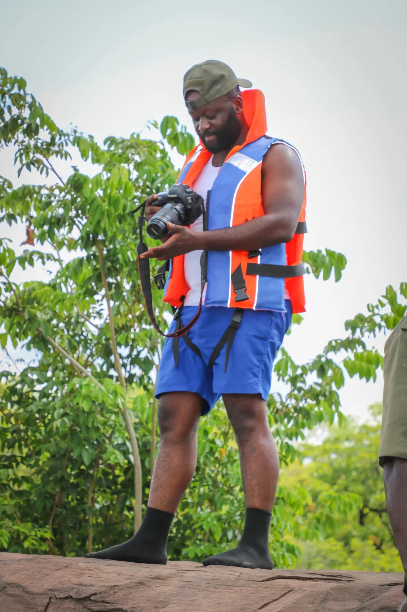
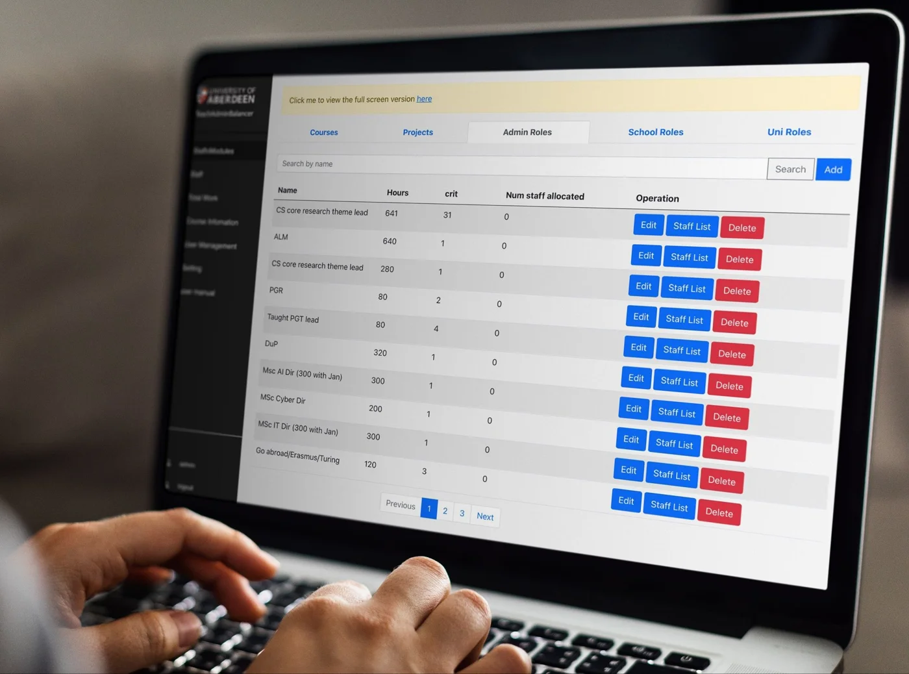
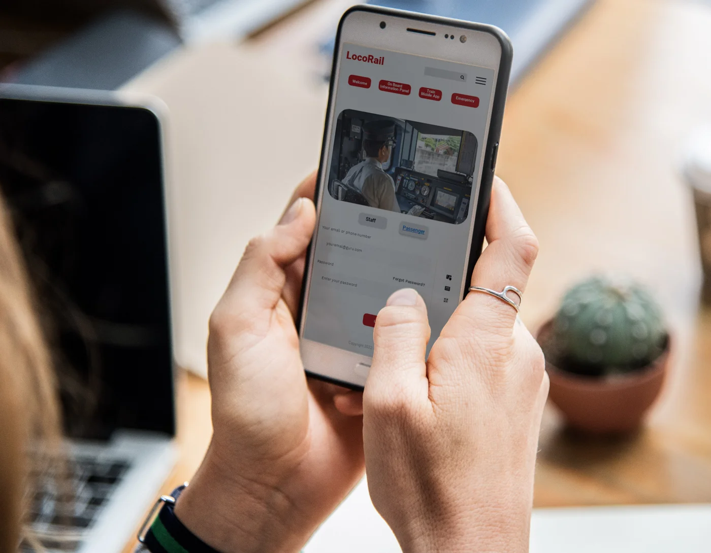
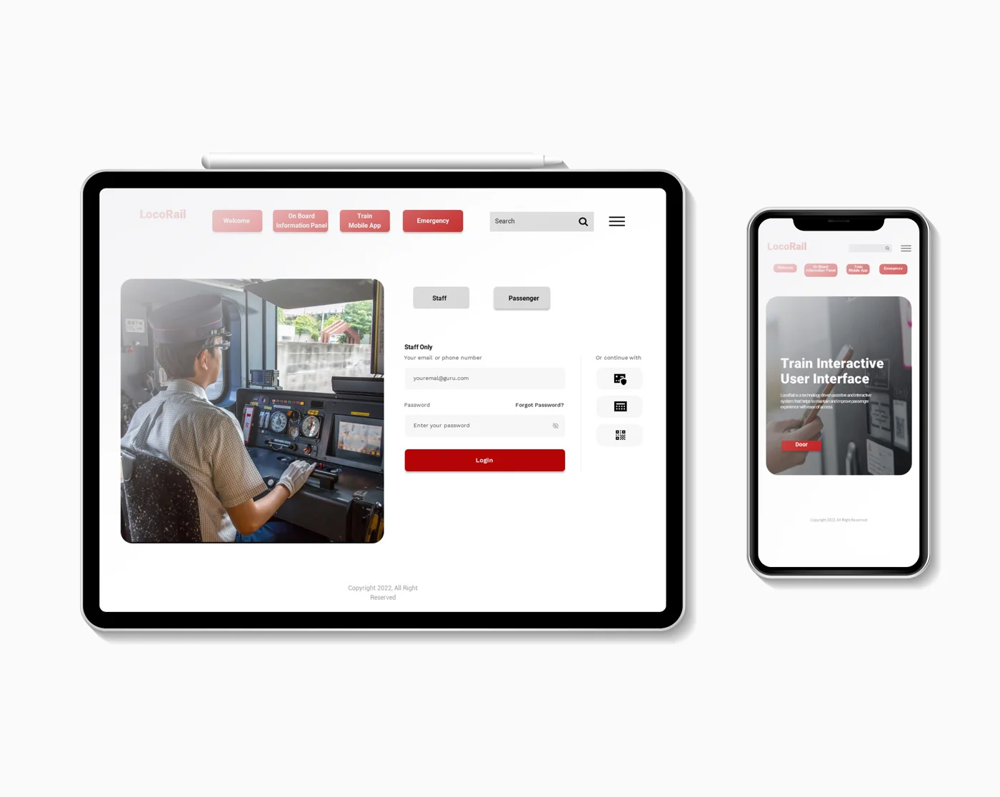
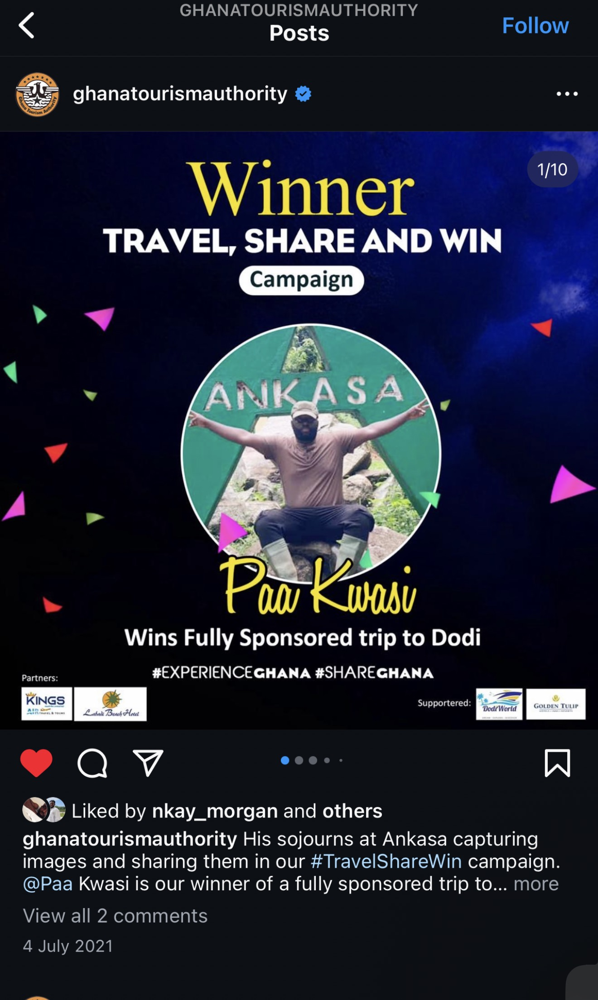
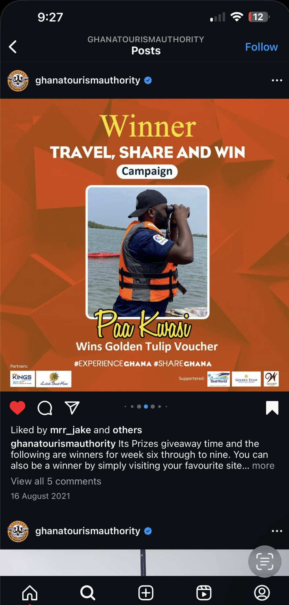

Part designer.
Making the complex feel clear.
- UX research & user journeys
- Interface design & prototyping
- Brand identity & visual communication
- Photography & digital media
FigmaAdobe Creative Cloud
THE PERSON BEHIND THE PRODUCTS
I’m Frederick Oppong Tabiri. A Digital Product Designer & AI Consultant and founder connecting creative thinking with practical delivery.
Explore my story ↓ Watch my 15-second intro
FROM VISUAL STORIES TO DIGITAL PRODUCTS
My career began in graphic design and visual communication. It grew into UX, digital media and product delivery.
At the Forestry Commission Ghana’s Wildlife Division, I led creative and digital communication for conservation work across 23 protected areas. That experience taught me to translate complex subjects into clear stories and useful experiences.
After an MSc in Information Technology at the University of Aberdeen, I brought my creative and technical background together. Today, through TabSphere LTD, I bring together digital product design, AI consulting and delivery across SaaS, customer engagement and logistics.
I work from the problem through to release: requirements, user journeys, priorities, acceptance criteria, QA and UAT. I collaborate with developers who carry out production implementation.
TWO WAYS OF THINKING. ONE CONNECTED PROCESS.
Making the complex feel clear.
Start with the problem. Shape a practical next step.
A FEW VIEWS OF MY WORK
Photography, interface concepts and responsive design, drawn from my creative archive.





MY WORK IN GHANA
My conservation and media work brought together campaign graphics, wildlife and tourism video, and staff communications.
RECOGNITION / 2021
A love of exploration. Stories worth sharing.
In 2021, I was recognised twice in the Ghana Tourism Authority’s “Travel, Share and Win” campaign, appearing under the name Paa Kwasi. My photography and travel contributions earned a fully sponsored trip to Dodi and a Golden Tulip voucher.

Fully sponsored trip awarded through the Travel, Share and Win campaign, following my photography and travel contributions from Ankasa.
View original announcement (screenshot, opens in a new tab)
Golden Tulip voucher awarded through the Travel, Share and Win campaign, celebrating the experience of exploring Ghana.
View original announcement (screenshot, opens in a new tab)Source: Ghana Tourism Authority Instagram announcements. Original screenshots retain the published dates and captions.
HOW I WORK
Clarify the user problem, business goal and constraints.
Map journeys, prototype ideas and define priorities.
Coordinate implementation against clear acceptance criteria.
Test the experience, validate releases and direct improvements.
LET’S MAKE SOMETHING USEFUL
Let’s talk about digital product design, UX/UI and practical applications of AI.
Get in touch on LinkedIn